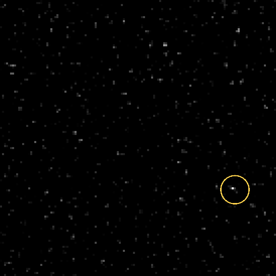
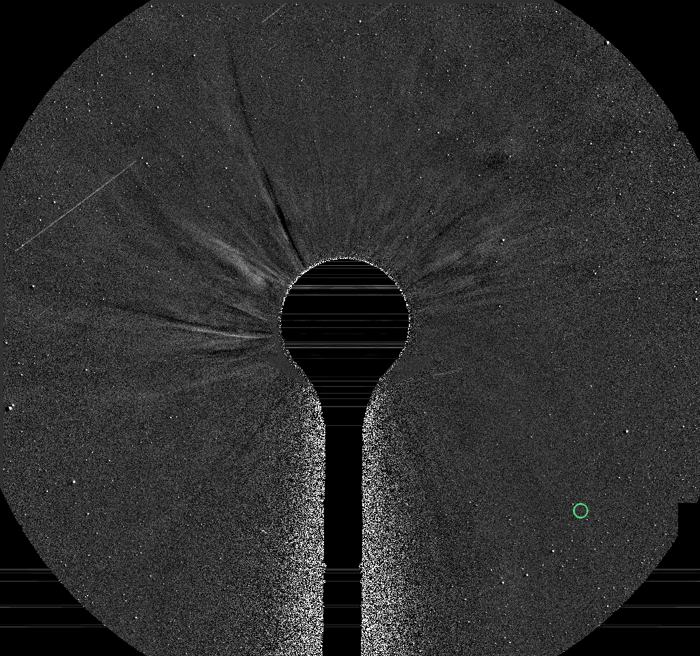
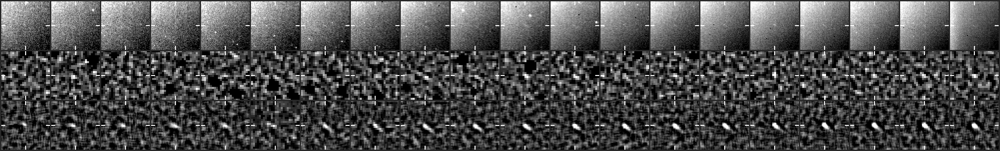
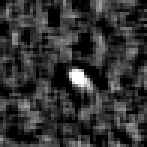

26 frames, 2026-11-02 11:15 to 17:30 UTC, peak 21 sigma, brightening.
A fixed patch of sky at 2x the camera's resolution: significance maps (stars and corona modelled out), the last 8 maps added along the fitted motion, black below 2.5 sigma. The ring rides the fitted path: green on frames with a measured hit, yellow before the first hit. A real object crosses the patch inside the ring; noise does not travel.

The object's quadrant at half resolution, from just outside the occulter out to the field edge, the last frames up to the newest hit: each frame minus the minimum of the previous 24 hours (streamers and stars stay, the static corona and glare cancel), lightly smoothed, no stacking, on a linear scale from -1 sigma of the frame's noise (so the noise shows as grain). The crosshair follows the fitted path, yellow on a measured hit. For where the object sits in the corona and what else is moving; a faint object is easier to judge in the stacked patch above.

Top: raw frame. Middle: significance map of that frame. Bottom: the detector's view, the last 8 maps stacked along the motion. Ticks mark the predicted position; a comet is a steady dot on the ticks.


2048x1920 full-resolution frame, origin upper left, x right, y down, 0-based (the Sungrazer 'Upper Left' convention). They are the centre of the stacked detection predicted from the fitted motion, good to about a pixel, not per-frame centroids; hunters' measurements tend to fall ~1 px right and up of these.
| date | HHMM | x | y | sigma |
|---|---|---|---|---|
| 2026-11-02 | 1115 | 1748 | 1520 | 8.0 |
| 2026-11-02 | 1130 | 1740 | 1516 | 8.5 |
| 2026-11-02 | 1145 | 1732 | 1512 | 9.2 |
| 2026-11-02 | 1200 | 1724 | 1508 | 8.9 |
| 2026-11-02 | 1215 | 1718 | 1504 | 8.8 |
| 2026-11-02 | 1230 | 1712 | 1500 | 9.4 |
| 2026-11-02 | 1245 | 1704 | 1498 | 8.9 |
| 2026-11-02 | 1300 | 1696 | 1494 | 9.1 |
| 2026-11-02 | 1315 | 1690 | 1490 | 10.9 |
| 2026-11-02 | 1330 | 1684 | 1486 | 11.8 |
| 2026-11-02 | 1345 | 1676 | 1482 | 10.6 |
| 2026-11-02 | 1400 | 1670 | 1480 | 11.7 |
| 2026-11-02 | 1415 | 1662 | 1474 | 14.1 |
| 2026-11-02 | 1430 | 1656 | 1470 | 12.4 |
| 2026-11-02 | 1445 | 1648 | 1468 | 11.8 |
| 2026-11-02 | 1500 | 1640 | 1464 | 11.9 |
| 2026-11-02 | 1515 | 1634 | 1460 | 12.1 |
| 2026-11-02 | 1530 | 1626 | 1456 | 13.4 |
| 2026-11-02 | 1545 | 1620 | 1452 | 13.1 |
| 2026-11-02 | 1600 | 1612 | 1448 | 17.9 |
| 2026-11-02 | 1615 | 1604 | 1444 | 18.7 |
| 2026-11-02 | 1630 | 1598 | 1440 | 16.7 |
| 2026-11-02 | 1645 | 1590 | 1436 | 20.6 |
| 2026-11-02 | 1700 | 1582 | 1432 | 19.9 |
| 2026-11-02 | 1715 | 1578 | 1428 | 15.7 |
| 2026-11-02 | 1730 | 1568 | 1424 | 20.8 |
Form layout (HHMM x y):
1115 1748 1520 1130 1740 1516 1145 1732 1512 1200 1724 1508 1215 1718 1504 1230 1712 1500 1245 1704 1498 1300 1696 1494 1315 1690 1490 1330 1684 1486 1345 1676 1482 1400 1670 1480 1415 1662 1474 1430 1656 1470 1445 1648 1468 1500 1640 1464 1515 1634 1460 1530 1626 1456 1545 1620 1452 1600 1612 1448 1615 1604 1444 1630 1598 1440 1645 1590 1436 1700 1582 1432 1715 1578 1428 1730 1568 1424
Sigma inside the ring on the fitted position vs the brightest 0.1% of the whole patch. A real object sits clearly above the tail.
| frame | ring | tail | |
|---|---|---|---|
| 20261102T101525 | 7.7 | 5.3 | |
| 20261102T103025 | 10.2 | 5.2 | |
| 20261102T104525 | 7.6 | 5.2 | |
| 20261102T110025 | 9.4 | 5.1 | |
| 20261102T111525 | 8.2 | 5.4 | hit |
| 20261102T113025 | 7.8 | 5.3 | hit |
| 20261102T114525 | 11.0 | 5.2 | hit |
| 20261102T120025 | 9.7 | 5.3 | hit |
| 20261102T121525 | 10.6 | 5.2 | hit |
| 20261102T123025 | 9.8 | 5.3 | hit |
| 20261102T124525 | 11.1 | 5.2 | hit |
| 20261102T130025 | 9.9 | 5.4 | hit |
| 20261102T131525 | 13.1 | 5.2 | hit |
| 20261102T133025 | 11.0 | 5.1 | hit |
| 20261102T134525 | 14.0 | 5.2 | hit |
| 20261102T140025 | 15.9 | 5.3 | hit |
| 20261102T141525 | 13.5 | 5.5 | hit |
| 20261102T143025 | 15.3 | 5.4 | hit |
| 20261102T144525 | 12.5 | 5.4 | hit |
| 20261102T150025 | 14.3 | 5.6 | hit |
| 20261102T151525 | 15.4 | 5.4 | hit |
| 20261102T153025 | 15.4 | 5.5 | hit |
| 20261102T154525 | 17.2 | 5.2 | hit |
| 20261102T160025 | 21.6 | 5.2 | hit |
| 20261102T161525 | 20.7 | 5.4 | hit |
| 20261102T163025 | 21.8 | 5.2 | hit |
| 20261102T164525 | 23.2 | 5.3 | hit |
| 20261102T170025 | 18.4 | 5.2 | hit |
| 20261102T171525 | 21.8 | 5.3 | hit |
| 20261102T173025 | 21.0 | 5.4 | hit |
Written 2026-11-02 17:55 UTC.